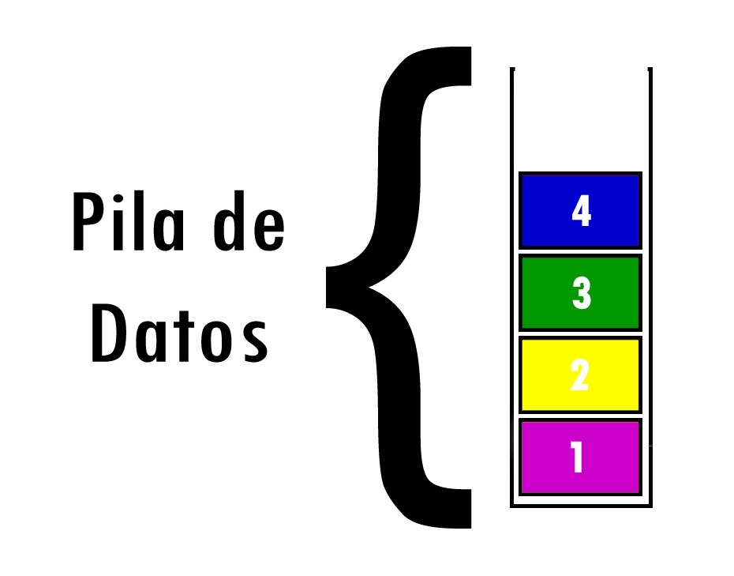
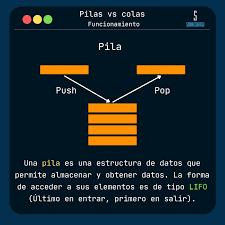

................................................................................
PILAS
La pila está es una estructura de datos lineal que sigue un orden particular en la que se realizan las operaciones. Este orden puede ser LIFO (last in, first out - último en entrar, primero en salir) o FILO (first in, last out - primero en entrar, último en salir), en una pila todas las posiciones de inserción y eliminación se permiten únicamente en un solo extremo de la lista.
Siguiente --->`push`: inserta un elemento en la pila.
`pop`: elimina el elemento superior de la pila.
`peek`: devuelve el elemento superior de la pila sin eliminarlo.
`isEmpty`: verifica si la pila está vacía.
`search`: busca un elemento en la pila y devuelve su distancia desde la parte superior.
Siguiente --->La pila es una estructura de datos lineal que se utiliza para almacenar la colección de objetos. Se basa en el principio LIFO (último en entrar, primero en salir). El framework de colecciones de Java proporciona numerosas interfaces y clases para almacenar la colección de objetos.
Siguiente --->La estructura de datos de la pila incluye dos operaciones importantes: insertar y extraer. La operación insertar inserta un elemento en la pila, mientras que la operación extraer lo elimina de la parte superior.
Siguiente --->La estructura de datos de la pila implementa y sigue el principio LIFO (último en entrar, primero en salir) . Esto implica que el último elemento que se inserta sale primero. El proceso de insertar un elemento en la pila se conoce como operación push. En este caso, la eliminación de elementos se conoce como operación pop.
Siguiente --->Los cuatro pilares de Java (encapsulación, abstracción, herencia y polimorfismo) son fundamentales para escribir aplicaciones Java eficientes, reutilizables y fáciles de mantener.
Siguiente --->Las pilas y las colas son estructuras de datos fundamentales en el mundo de la programación. En este artículo, exploraremos en detalle qué son las pilas y las colas, cómo funcionan, y cómo implementarlas en Java utilizando las clases Stack y `Queue`.
Pilas
Una pila o estructura FIFO (First In, First Out) es un sistema donde el primer elemento en entrar es el primero en salir. Es un método de organización secuencial esencial en informática para buffers, gestión de memoria y colas de impresión, asegurando que los datos se procesen en el orden exacto de llegada.
Una pila (stack) en informática es una estructura de datos basada en el principio LIFO (Last In, First Out), donde el último elemento en entrar es el primero en salir. Funciona como una pila de platos, gestionando datos mediante dos operaciones clave: push (apilar/añadir al tope) y pop (desapilar/retirar el tope).
Las pilas y las colas son estructuras de datos esenciales en programación, utilizadas en una amplia variedad de aplicaciones. En Java, las implementamos utilizando las clases `Stack` y la interfaz `Queue`. Esperamos que esta guía te haya ayudado a comprender mejor estas estructuras y cómo utilizarlas en tus proyectos. ¡Explora más y experimenta con pilas y colas para mejorar tus habilidades de programación!
Inicioimport java.util.Stack; public class PILA2 { public static void main(String[] args){ Stack<String> Pelotas = new Stack(); Pelotas.push("Pelota café"); Pelotas.push("Pelota negra"); Pelotas.push("Pelota roja"); Pelotas.push("Pelota amarilla"); Pelotas.push("Pelota violeta"); System.out.println(Pelotas); System.out.println("Ultimo elemento " + Pelotas.peek()); System.out.println("Ultimo elemento eliminado " + Pelotas.pop()); System.out.println(Pelotas); System.out.println("Ubicación: " + Pelotas.search("Pelota café")); } }